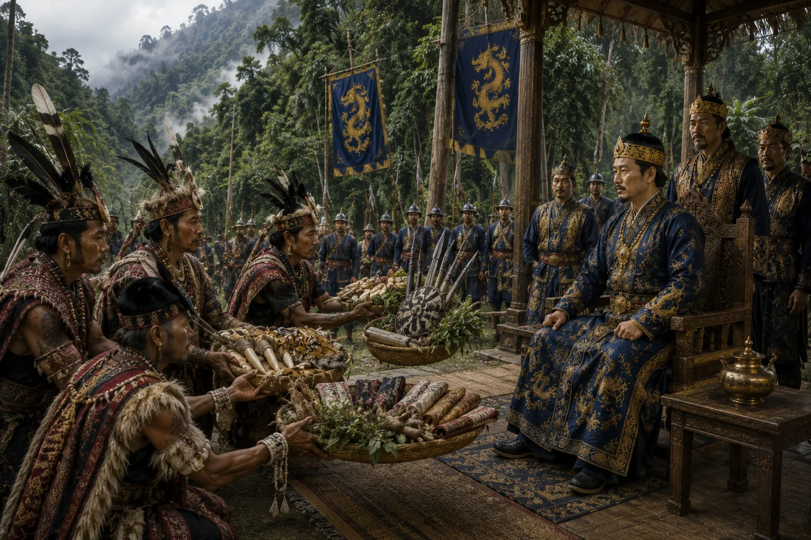

Submission and Tribute of the Tangshu Chiefs
c. 1462 · The coming of Sukaphaa

Defeated Tangshu leaders present offerings of swords, amber, and mountain goods, swearing eternal peace with the Ahom throne.
Sources have not yet been catalogued for this record.
People: Pratap Singha (Susenghphaa), Susenphaa
Open this scene in the interactive archive · Follow this event on MAP